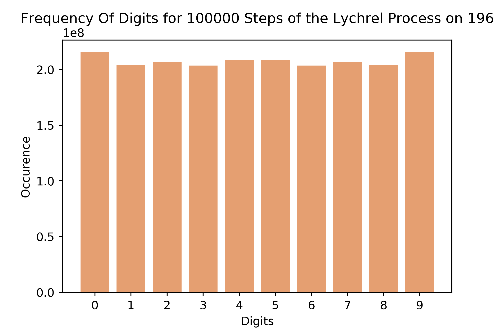
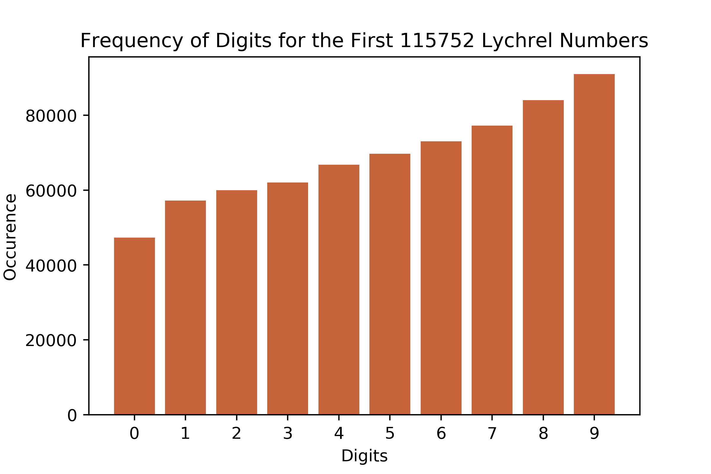

What I've Found Out
Abstract
Throughout this investigation, I've demonstrated many well-known properties of Lychrel numbers. I have also revealed several behaviours of Lychrel numbers that have either never been previously seen or are tucked away in other obscure corners of the web. The counting of digits in the partial application of the Lychrel process to 196 demonstrated there is no bias towards any given digit in this sequence. A similar counting of digits in the first 115,752 Lychrels did however demonstrate a positive bias towards higher digits. An application of the Lychrel process to precision decimal point numbers has demonstrated its validity holds up for many decimals. An analysis of the distance between adjacent Lychrels shows the shortening distance and increasing frequency of Lychrels as we approach larger and larger integers. A reverse application of the Lychrel process revealed that for many Lychrels the process will work in reverse, yet highlighted that for some the process does not work in either direction. An analysis of the symmetricity of the Lychrel process highlights that for any partial application of the Lychrel process on integers, a semi-symmetric number will be formed. Finally, while an investigation into the universality of digits in the Lychrel process applied to 196 showed that there were no universal digits, it did however reveal that the process eventuates to every digit being present in every number formed.
All investigations were carried out using Jupyter notebooks available
here.
1. The Distribution of Digits in 196
This was the first thing investigated, as I had suspicions that the application of the Lychrel process to 196 would yield some specific distribution of digits that may give insight into the reasons behind its non-convergence. However as you can see below, the reality was a rather smooth distribution of digits up to at least 100,000 iterations of the process. This realisation showed that there does not seem to be a specific integer responsible for the non convergence of the 196 Lychrel process.
2. The Distance Between Lychrels
The next thing I marked for analysis was the gaps between Lychrels up to 100,000 and subsequently up to 1,000,000. The purpose of this was to gain insight into the evolution of Lychrels as we get into higher and higher integer values. From the behaviour of the graph below, we can discern a clear decay as the distance between Lychrels gets smaller with higher numbers. Both the spikes in the graph and the more 'baseline' noise seem to decrease over time.

The above graph becomes even more interesting when you compare it to an analysis of gaps between Lychrels up to 1,000,000.
This graph seems to almost mimic the previous one as peaks on this graph mimic peaks on the previous graph. Despite that, that graph is entirely contained within the first twentieth of this graph. By increasing the search space by a factor of 10 we have found 20 times as many Lychrels, indicative of the decreasing gap between Lychrels as we investigate higher numbers. I would not be surprised if this pattern continued as we increase the search space but unfortunately I do not have the computational power to investigate this. Additionally, there is a much higher prevalence of very small gaps (less than 5) towards the very extreme end of this graph. This is hard to see on this graph but easier to see on the interactive graphs here.
3. The Lychrel Process & Semi-Palindromes
This behaviour appears to be an interesting consequence of the way the Lychrel process forms palindromic numbers. The easiest way to demonstrate what I mean by "semi-palindromes" is to demonstrate using the first few results of the Lychrel process applied to 196: 887, 1675, 7436, 13783, 52514, 94039, 187088.
Let's take 52514, start by looking at the digits at either end: 5 and 4, this number clearly is not a palindrome as these are different numbers. However, we note that 5 and 4 have a difference of only 1. If we move towards the centre of the number on each side we now see digits 2 and 1, again these have only a difference of 1. Moving in again we hit 5 from both sides.
In this example, a 'semi-palindrome' is a number for which corresponding digits on either side never have a difference of greater than 1. As far as I can tell, the Lychrel process applied to any number will form many semi-palindromes. You can verify this for yourself with 94039 and 7436. Of those numbers formed that aren't semi-palindromes, all seem to start with the digit 1. Interestingly, it appears that removing this first digit from these numbers will as well always form a semi palindrome (i.e. 1675 -> 675, which is semi-palindromic). You can again verify this for yourself by looking at the digits in 13783 and 187088.
4. The Decimal Point and the Lychrel Process
It would appear that many decimal point numbers can form palindromes through the exact same process as we would apply to any integer. You can easily verify this by inputting a decimal number here. Let's take for example the number 3.254, reverse this to get 452.3 and add to get 455.55. Repeat to add 455.55 and 55.554 to get 511.104. Finally 511.104 and 401.115 sum to 912.219, a fixed point palindrome. This is very interesting behaviour and not one I've seen others discuss before, I have not categorised or explicitly hunted for decimal-point Lychrels as assumedly there is an infinite amount of them. They do however seem to exist, take for example 98324.124141. They also appear to follow the pattern of semi-palindromes previously discussed. Interestingly, the most delayed palindrome I saw in personal experimentation was 196.196 which takes 24 steps to reach 111937408.804739111.
5. Universal Digits in the Lychrel Process
I had thought it possible that in any given application of the Lychrel process there would be some universal digit present in every partial application that could potentially be responsible for non-convergence. I had hoped this digit could act as a marker for Lychrel numbers. I tested this idea on 196 and found that there was in fact no digit that was constant across every single partial application. Every digit was found to be missing at least once, and this seemed to hold up for numerous seed Lychrels that I tested. It did not however hold up for some other Lychrels for reasons I will now make clear.
Interestingly, when testing this on 196 I noticed that after 192 applications of the process no steps appeared to be missing any of the digits 0-9 whatsoever i.e. all steps after this point contained all digits. This appeared to be the case for all the seed Lychrels, as they all seemed to have no universal digits and contained all digits after just a few hundred steps. For example 43550 under the Lychrel process contains no universal digits and contains every digit after 338 steps. As this only works for seed Lychrels, you could take any Lychrel in a sequence after this point where every digit is found and conclude that every digit is universal.
6. The Reverse Lychrel Process
The reverse Lychrel process is much like the regular Lychrel process but instead of addition, we subtract and take the absolute value. For example, we take 196 from 691 giving 495. Then we take 495 from 594 which gives 99, a palindrome. In fact, this reverse process generates a palindrome for many numbers we typically consider to be 'lychrel' numbers, and conversely many numbers that will form a palindrome by the regular process will not form a palindrome by this process. Even more interestingly, there is a subset of numbers that do not form a palindrome by either of the two processes. I call these numbers the 'true Lychrels' and the first few are 1947, 5258, 6347, 6490, 7436, 7491, 7689, 8349, 8525, 8899, 9438, 9867, 9988...
It is interesting to note that the palindromes formed by this process seemingly fall into 1 of 3 forms, these being numbers of all 9s (9, 99, 999, etc), 0s bookended by 9s (909, 9009, 90009, etc), or 9s bookended by 5 and 4 (5445, 5495, 54995, etc). Also of note is that seemingly all numbers that fail to form a palindrome fall into alternating between two numbers over and over again (i.e. one such loop is formed like so: 8712 - 2178 = 6534, while 6534 - 4356 = 2178, forming an infinite loop).
7. Digit Distribution over Lychrel Numbers
At the very end of my investigations, I reinvestigated the frequency of digits but instead of looking at just 196 I instead looked at the digits appearing in the first 115,752 Lychrel numbers (up to 1,000,000). This told more of a story as you can quite clearly see in the graph below there is a positive correlation between the value of a digit and its likelihood to appear in a Lychrel number. Note that there is almost double the amount of 9s as there are 0s in this dataset. I think this is due to an increased likelihood for carrying to occur during addition when numbers have digits of higher values, this carrying will disrupt the Lychrel process. This may give insight as to what 'makes' a Lychrel number to someone with much more mathematical knowledge than myself.
Conclusion
After much investigation, I am personally no closer to understanding why it is that some numbers converge to palindrome and some do not. Nor am I any closer to understanding why 89 takes 24 steps to form a palindrome when every other number under 1000 is significantly faster to converge. I would like to reiterate that for anyone interested all of my Jupyter notebooks are available here. If you discover something that you would like added to the site feel free to email to this address. Happy hunting!